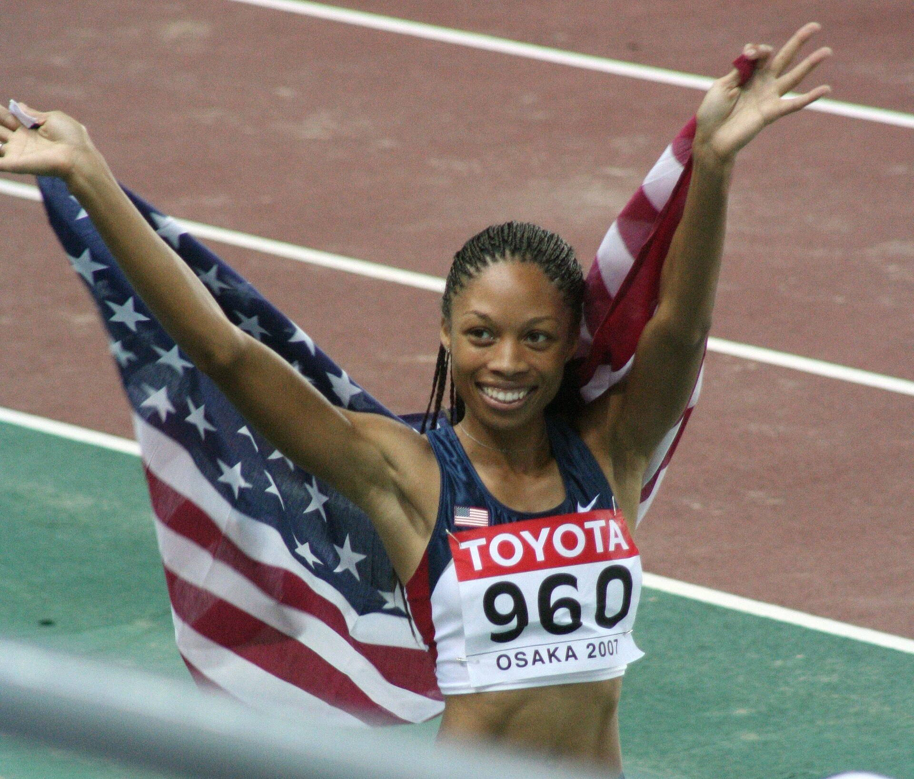

A história de Felix no atletismo atravessa quase duas décadas de Jogos Olímpicos, Campeonatos Mundiais, recordes e transformações profundas dentro e fora das pistas. Especialista nas provas de velocidade, a norte-americana conseguiu algo raro: foi campeã mundial nos 200 metros, campeã mundial nos 400 metros e peça fundamental em alguns dos revezamentos mais dominantes da história dos Estados Unidos.
Quando encerrou a carreira internacional em 2022, Felix acumulava 11 medalhas olímpicas — sete ouros, três pratas e um bronze — conquistadas em cinco edições dos Jogos. Nos Campeonatos Mundiais de atletismo, terminou com 20 medalhas, sendo 14 de ouro, três de prata e três de bronze. Os dois números a colocaram em uma dimensão histórica dentro da modalidade.
Sua longevidade ajuda a explicar o tamanho da trajetória. Felix apareceu como fenômeno ainda adolescente, conquistou sua primeira medalha olímpica aos 18 anos, viveu o auge nos 200 metros, migrou com sucesso para os 400 metros, superou uma grave lesão, voltou ao alto nível após a maternidade e ainda conquistou duas medalhas nos Jogos de Tóquio, disputados quando já tinha 35 anos.
É uma carreira que também ajuda a compreender a evolução recente da história do atletismo nos Jogos Olímpicos, especialmente em uma era marcada por grandes velocistas, avanço dos revezamentos e aumento da visibilidade das atletas mulheres.
O início precoce
Allyson Michelle Felix nasceu em 18 de novembro de 1985, em Los Angeles, na Califórnia. Ela começou a competir no atletismo durante o primeiro ano do ensino médio e rapidamente passou do ambiente escolar para o cenário internacional. Em 2001, conquistou o título dos 100 metros no Mundial Sub-18. A explosão definitiva aconteceu em 2003.
Aos 17 anos, Felix correu os 200 metros em 22s11 na Cidade do México. O tempo superava o então recorde mundial júnior, embora a marca não tenha sido posteriormente ratificada como recorde porque não houve o controle antidoping exigido para a homologação. Ainda assim, a apresentação mostrou ao atletismo mundial que uma nova velocista de elite havia surgido.
Um ano depois, ela já estava nos Jogos Olímpicos.
A primeira medalha olímpica
Felix chegou a Atenas 2004 com apenas 18 anos e disputou os 200 metros. Na final, terminou em segundo lugar, atrás da jamaicana Veronica Campbell, e conquistou a primeira medalha olímpica de sua carreira.
A prata seria apenas o início de uma trajetória olímpica extraordinariamente longa. Felix voltaria aos Jogos em Pequim 2008, Londres 2012, Rio 2016 e Tóquio 2020, completando cinco participações consecutivas.
Antes da segunda Olimpíada, porém, ela já havia começado a construir uma coleção impressionante de títulos mundiais.
O tricampeonato mundial
Os 200 metros foram a prova que transformou Felix em uma estrela global.
Em Helsinque, em 2005, ela conquistou seu primeiro título mundial adulto. Dois anos depois, em Osaka, repetiu a vitória nos 200 metros e ainda integrou as equipes norte-americanas campeãs dos revezamentos 4x100 e 4x400 metros.
Em Berlim, em 2009, veio o terceiro ouro mundial consecutivo nos 200 metros. Felix também voltou a subir ao lugar mais alto do pódio com o 4x400. Dessa maneira, estabeleceu um período de domínio internacional sobre a meia volta da pista: campeã mundial individual em 2005, 2007 e 2009.
No meio dessa sequência, os Jogos de Pequim 2008 trouxeram mais duas medalhas olímpicas. Felix novamente ficou com a prata nos 200 metros e conquistou seu primeiro ouro olímpico como integrante da equipe norte-americana do revezamento 4x400 metros.
O auge olímpico
Depois de duas pratas consecutivas nos 200 metros, Allyson Felix chegou a Londres 2012 buscando o ouro olímpico individual que ainda faltava.
Na final dos 200 metros, venceu com 21s88, à frente da jamaicana Shelly-Ann Fraser-Pryce e da compatriota Carmelita Jeter. Era a consagração olímpica na prova em que Felix havia construído a primeira parte de sua carreira.
Londres, porém, teve muito mais.
Felix também participou do 4x100 metros campeão olímpico dos Estados Unidos. Tianna Madison, Felix, Bianca Knight e Carmelita Jeter completaram a prova em 40s82, marca que estabeleceu o recorde mundial do revezamento.
Depois, ela ainda conquistou o ouro no 4x400 metros. Em uma única edição dos Jogos, foram três títulos olímpicos: 200 metros, 4x100 e 4x400. Ela também participou dos 100 metros em Londres e terminou em quinto lugar na final.
As 11 medalhas olímpicas
A coleção olímpica de Felix ficou distribuída por cinco edições:
- Atenas 2004: prata nos 200 metros.
- Pequim 2008: prata nos 200 metros e ouro no 4x400 metros.
- Londres 2012: ouro nos 200 metros, ouro no 4x100 metros e ouro no 4x400 metros.
- Rio 2016: prata nos 400 metros, ouro no 4x100 metros e ouro no 4x400 metros.
- Tóquio 2020: bronze nos 400 metros e ouro no 4x400 metros.
O saldo foi de sete ouros, três pratas e um bronze. Em Tóquio, Felix chegou à 11ª medalha e ultrapassou Carl Lewis no número de medalhas olímpicas conquistadas por um atleta norte-americano no atletismo.
A grave lesão
A trajetória dela também teve uma interrupção importante pouco depois do auge de Londres.
No Campeonato Mundial de Moscou, em 2013, a norte-americana sofreu uma lesão no tendão durante a final dos 200 metros e não conseguiu completar a prova. Foi um dos momentos físicos mais difíceis de uma carreira que, até então, havia sido marcada por enorme regularidade.
Felix conseguiu reconstruir sua trajetória e, durante esse processo, ampliou seu campo de atuação.
Os 400 metros, que já faziam parte de seu repertório, passaram a ganhar ainda mais importância.
Campeã mundial dos 400 metros
No Mundial de Pequim, em 2015, Felix mostrou que sua grandeza não estava limitada aos 200 metros.
Ela venceu a final dos 400 metros com 49s26, sua melhor marca pessoal na distância, superando Shaunae Miller, das Bahamas, que terminou com 49s67. Com o resultado, Felix tornou-se campeã mundial individual nas duas distâncias.
A mudança também demonstrou sua versatilidade como velocista. Poucos atletas conseguem construir uma trajetória de elite mundial em provas com exigências tão diferentes: os 200 metros combinam velocidade máxima e capacidade de manutenção na curva e na reta, enquanto os 400 metros exigem um nível muito maior de resistência de velocidade e distribuição de esforço.
Felix conseguiu vencer Mundial nas duas.
Uma das finais mais dramáticas
Nos Jogos do Rio de Janeiro, Felix buscava o ouro olímpico nos 400 metros.
A decisão terminou em uma das chegadas mais lembradas daquela edição. Shaunae Miller, das Bahamas, venceu com 49s44, enquanto Felix terminou com 49s51 e ficou com a prata. A diferença entre as duas foi de apenas sete centésimos.
Mesmo sem o ouro individual, Felix saiu do Rio com três medalhas. Além da prata nos 400 metros, conquistou os títulos dos revezamentos 4x100 e 4x400.
Naquele momento, sua coleção olímpica já havia alcançado nove medalhas.
Maternidade, complicações e uma nova fase
Em novembro de 2018, Allyson Felix viveu uma mudança que ultrapassaria o esporte.
Durante a gravidez, ela desenvolveu pré-eclâmpsia e precisou passar por uma cesariana de emergência para o nascimento da filha Camryn. A experiência da maternidade tornou-se posteriormente parte importante de sua atuação pública em defesa das mulheres no esporte.
Felix também passou a se posicionar publicamente sobre proteção contratual para atletas durante a gravidez e após o parto. Em sua própria apresentação oficial, ela destaca a luta por melhores proteções de maternidade para atletas e o trabalho posterior voltado à defesa e ao empoderamento de mulheres.
A volta às pistas também foi histórica.
Em 2019, menos de um ano depois do nascimento da filha, Felix retornou ao Campeonato Mundial, em Doha, e voltou a conquistar títulos. Participou do revezamento misto 4x400 campeão e também integrou a campanha do ouro norte-americano no 4x400 feminino.
O recorde olímpico aos 35 anos
Os Jogos de Tóquio 2020, realizados em 2021, poderiam ter sido apenas uma despedida simbólica de uma atleta já consagrada.
Felix transformou a competição em mais um capítulo histórico.
Na final dos 400 metros, correu em 49s46 e conquistou a medalha de bronze, atrás de Shaunae Miller-Uibo e Marileidy Paulino. Era sua décima medalha olímpica.
Depois veio o 4x400 metros.
Os Estados Unidos conquistaram o ouro, e Felix chegou à 11ª medalha olímpica e à sétima de ouro. Com isso, superou Carl Lewis na contagem de medalhas olímpicas do atletismo norte-americano e encerrou sua quinta participação nos Jogos como a atleta mulher mais medalhada da história do atletismo olímpico.
Medalhas em Campeonatos Mundiais
Se a coleção olímpica já seria suficiente para colocar Felix entre os grandes nomes da modalidade, seus números em Campeonatos Mundiais ampliaram ainda mais essa condição.
Sua trajetória terminou com 20 medalhas em Mundiais: 14 ouros, três pratas e três bronzes. O currículo inclui conquistas nos 200 metros, 400 metros, 4x100, 4x400 e 4x400 misto.
Nos revezamentos, a longevidade foi ainda mais evidente. Felix participou de gerações diferentes da seleção norte-americana e continuou conquistando medalhas por muitos anos depois de seus primeiros títulos.
A despedida das pistas
Ela anunciou em abril de 2022 que aquela seria sua última temporada no atletismo. O encerramento internacional aconteceu em casa, no Campeonato Mundial disputado em Eugene, no Oregon.
Primeiro, conquistou o bronze no revezamento misto 4x400 metros, que representou sua 19ª medalha em Mundiais. Depois, voltou à pista nas eliminatórias do 4x400 feminino. Os Estados Unidos acabariam campeões na final, resultado que lhe garantiu a 20ª e última medalha mundial e o 14º ouro.
A despedida tinha um simbolismo especial: depois de uma carreira internacional iniciada ainda adolescente, Felix encerrou sua trajetória no primeiro Campeonato Mundial de atletismo realizado em solo norte-americano.
O legado de Allyson Felix
Deixou as pistas em 2022 com uma história que ultrapassa a quantidade de medalhas.
Esportivamente, sua trajetória representa uma das maiores demonstrações de longevidade do atletismo moderno. Ela saiu de uma prata olímpica nos 200 metros aos 18 anos para um bronze olímpico nos 400 metros aos 35, sem deixar de conquistar títulos mundiais e olímpicos no longo período entre esses dois momentos.
Também mostrou uma versatilidade incomum. Foi referência nos 200 metros, tornou-se campeã mundial nos 400 e integrou equipes históricas dos revezamentos norte-americanos.
Fora das pistas, passou a usar sua projeção para discutir maternidade, condições oferecidas às atletas e participação feminina no esporte. Posteriormente, também entrou no empreendedorismo com a criação da marca Saysh e permaneceu ligada ao movimento olímpico.
A longevidade dela também fez com que sua carreira atravessasse uma das eras mais marcantes da velocidade mundial, período que teve Usain Bolt como o principal fenômeno das provas masculinas de velocidade. Enquanto o jamaicano redefiniu os limites dos 100 e 200 metros, Felix construiu sua própria dimensão histórica pela combinação de títulos individuais, domínio nos revezamentos e presença em cinco edições dos Jogos Olímpicos.
A carreira de Allyson Felix não pode ser resumida a uma corrida, uma Olimpíada ou um recorde. Sua grandeza está justamente na soma: velocidade, títulos, adaptação, longevidade e capacidade de continuar relevante em períodos muito diferentes do atletismo.
Quando encerrou a carreira, em 2022, deixou 11 medalhas olímpicas e 20 medalhas em Campeonatos Mundiais como registros concretos de uma trajetória que começou como promessa adolescente e terminou entre as maiores da história das pistas.